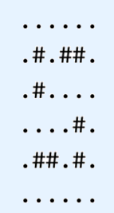

菊开讲课，必属精品！
[bzoj1280] 卖猪pigs
题面
在一个养猪场工作。这个养猪场有 个锁着的猪圈，但 并没有钥匙。有 个顾客会到养猪场来买猪，一个接着一个。每一位顾客都会有一些猪圈的钥匙，他们会将这些猪圈打开并买走固定数目的猪。所有顾客有的钥匙和他们需要买猪的数量在事先都告诉了 ，于是 要订一个计划，使得卖出去的猪最多。买卖的过程是这样的：一个顾客前来，并打开所有他可以打开的猪圈。然后 从这些猪圈里牵出固定数目的猪卖给顾客（最多只能和顾客需要数相等），并可以重新安排这些开着的猪圈中的猪。每个猪圈可以存放任意数目的猪。写一个程序，使得 能够卖出去尽可能多的猪。
,
题解
暂咕
[bzoj2406] 矩阵
题面
给定一个整数矩阵 ，求一个矩阵 满足 ，且使下式值最小：
题解
暂咕
[TJOI2015] 组合数学
题面
为了提高智商， 开始学习组合数学。某一天她解决了这样一个问题：给一个 的网格图，其中某些格子有财宝。每次从左上角出发，只能往右或下走。问至少要走几次才可能把财宝全捡完。
但是她还不知足，想到了这个问题的一个变形：假设每个格子中有好多块财宝，而每一次经过一个格子至多只能捡走一块财宝，其它条件不变，至少要走几次才可能把财宝全捡完？
这次她不会做了，你能帮帮她吗？
题解
最长链等于最少反链覆盖
每个点向不能到达它的点连边，跑最长路
[bzoj1189] 紧急疏散evacuate
题面
发生了火警，所有人员需要紧急疏散！假设每个房间是一个 的矩形区域。每个格子可以是空地、墙或者门，人们可以从门撤出房间。已知门一定在房间的边界上，并且边界上不会有空地。最初，每块空地上都有一个人，在疏散的时候，每一秒钟每个人都可以向上下左右四个方向移动一格，当然他也可以站着不动。疏散开始后，每块空地上就没有人数限制了（也就是说每块空地可以同时站无数个人）。但是，由于门很窄，每一秒钟只能有一个人移动到门的位置，一旦移动到门的位置，就表示他已经安全撤离了。现在的问题是：如果希望所有的人安全撤离，最短需要多少时间？或者告知根本不可能。
题解
对时间建分层图
[POI2010] Bridges
题面
为了减肥，他来到了瘦海，这是一个巨大的海，海中有 个小岛，小岛之间有 座桥连接，两个小岛之间不会有两座桥，并且从一个小岛可以到另外任意一个小岛。现在 想骑单车从小岛 出发，骑过每一座桥，到达每一个小岛，然后回到小岛 。霸中同学为了让 减肥成功，召唤了大风，由于是海上，风变得十分大，经过每一座桥都有不可避免的风阻碍 ， 十分 ，于是用泡芙贿赂了你，希望你能帮他找出一条承受的最大风力最小的路线。
,
题解
二分答案，网络流检验
先随机定向，检查每个点的度数
对于一个点入度减出度为正的，源点向其连边，否则该点向汇点连边
边权为度数差的绝对值
[bzoj4213] 贪吃蛇
题面
最近 迷上了贪吃蛇游戏，在玩了几天却从未占满全地图的情况下，他不得不承认自己是一个弱菜，只能改去开发一款更弱的贪吃蛇游戏。
在开发的过程中， 脑洞大开，搞了一个多条蛇的模式。但由于这种模式太难操作，于是他只好改变游戏的玩法，稍微变化一下游戏目标。
新的游戏是这样的：
一些蛇覆盖了一个网格。每个格子要么是一个障碍物，要么是蛇的一部分。每条蛇占据了一条折线（拐角处只能水平和竖直连接），且至少占据两个格子。蛇与蛇之间不能重叠，蛇也不会与自己重叠。每条蛇还必须满足以下两个条件中的一个：
两个端点所在的格子在网格的边界。
蛇构成一个环，即两个端点相邻（垂直或水平，不能斜着），至少要占据 个格子（否则没法形成环）。
给定一个网格，在满足前面所述的条件下覆盖所有空地，并使得端点在网格边界（即不构成环）的蛇尽量少。（如果一条蛇既构成环，又是端点在边界，那么不计入答案）
例如，以下网格：

可以由下面三种方案覆盖。还有其它的方案，但是没法仅用一条不构成环的蛇就覆盖整个网格。
题解
黑白染色，边界的点下界为 ，上界为
内部的点上下界皆为 ，障碍不连边
[CEOI2008] order
题面
有 个工作， 种机器，每种机器你可以租或者买过来。每个工作包括若干道工序，每道工序需要某种机器来完成，你可以通过购买或租用机器来完成。
现在给出这些参数，求最大利润。
题解
源点向工作连收益
工作向机器连租的价格
机器向汇点连买的价格
用总收益减去最小割
[bzoj3774] 最优选择
题面
小 手上有一个 的方格图，控制某一个点要付出 的代价，然后某个点如果被控制了，或者它周围的所有点（上下左右）都被控制了，那么它就算是被选择了的。一个点如果被选择了，那么可以得到 的回报。
现在请你帮小 选一个最优的方案，使得回报减代价尽可能大。
题解
暂咕
T9
题意
的网格，每个位置有 种选择，编号为 ，每种选择都有对应收益（可能为负）
限制每个点分别和它上下左右相邻的 个点的选择编号之和不能超过
最大化总收益
题解
暂咕